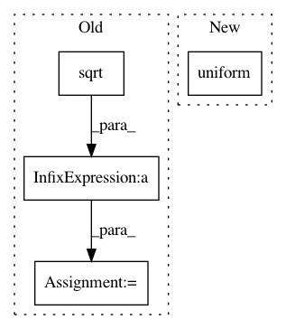

1c953893e4def68e706c14ddf25c81d6ececa21a,torch_geometric/nn/modules/graph_conv.py,GraphConv,reset_parameters,#GraphConv#,37
Before Change
self.reset_parameters()
def reset_parameters(self):
stdv = 1. / math.sqrt(self.in_features)
self.weight.data.uniform_(-stdv, stdv)
if self.bias is not None:
self.bias.data.uniform_(-stdv, stdv)
After Change
def reset_parameters(self):
size = self.in_features
uniform(self.weight, self.bias, size)
def forward(self, adj, input):
return graph_conv(adj, input, self.weight, self.bias)
In pattern: SUPERPATTERN
Frequency: 3
Non-data size: 4
Instances
Project Name: rusty1s/pytorch_geometric
Commit Name: 1c953893e4def68e706c14ddf25c81d6ececa21a
Time: 2017-11-27
Author: matthias.fey@tu-dortmund.de
File Name: torch_geometric/nn/modules/graph_conv.py
Class Name: GraphConv
Method Name: reset_parameters
Project Name: rusty1s/pytorch_geometric
Commit Name: 537de129aff815d5690e46858c7e5c1de0d4abd6
Time: 2017-11-27
Author: matthias.fey@tu-dortmund.de
File Name: torch_geometric/nn/modules/lin.py
Class Name: Lin
Method Name: reset_parameters
Project Name: nipy/dipy
Commit Name: f698c4dbfc266bae9c1d1ceb0d906863c9b54e2e
Time: 2013-05-14
Author: caruyer@gmail.com
File Name: dipy/core/sphere_stats.py
Class Name:
Method Name: random_uniform_on_sphere